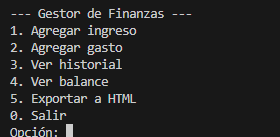

Gestor de Finanzas en Java
Aplicación de consola para gestionar ingresos y gastos personales con persistencia en archivos
Descripción del Proyecto
Este proyecto Java permite registrar ingresos y gastos, mostrar un historial de transacciones, calcular el balance actual y exportar los datos a un archivo HTML. Todos los datos se guardan persistentemente en un archivo de texto.

Características principales
- Registro de transacciones (ingresos/gastos)
- Visualización del historial completo
- Cálculo automático del balance
- Persistencia de datos en archivo
- Generación de reportes HTML
- Interfaz de consola intuitiva
Estructura del Proyecto
El proyecto consta de tres clases principales:
// Clase principal con el menú interactivo
public class Main {
public static void main(String[] args) { ... }
}
// Clase que maneja la lógica de negocio
public class GestorFinanzas {
private List<Transaccion> transacciones;
public void agregarTransaccion() { ... }
public void mostrarHistorial() { ... }
public void mostrarBalance() { ... }
public void exportarHTML() { ... }
}
// Clase que representa una transacción financiera
public class Transaccion {
private String tipo;
private double monto;
private String descripcion;
// Getters y toString()
}Clase Main - Menú Interactivo
La clase Main contiene el punto de entrada del programa y muestra un menú interactivo:
public class Main {
public static void main(String[] args) {
GestorFinanzas gestor = new GestorFinanzas();
Scanner sc = new Scanner(System.in);
do {
// Mostrar menú
System.out.println("\n--- Gestor de Finanzas ---");
System.out.println("1. Agregar ingreso");
System.out.println("2. Agregar gasto");
// Más opciones...
switch (opcion) {
case 1: // Agregar ingreso
case 2: // Agregar gasto
case 3: // Ver historial
case 4: // Ver balance
case 5: // Exportar a HTML
}
} while (opcion != 0);
}
}Flujo del programa
El programa sigue este flujo básico:
- Muestra el menú de opciones
- Recibe la entrada del usuario
- Ejecuta la operación correspondiente
- Vuelve al menú hasta que el usuario elija salir
Clase GestorFinanzas - Lógica Principal
Esta clase contiene toda la lógica para manejar las transacciones financieras:
public class GestorFinanzas {
private List<Transaccion> transacciones = new ArrayList<>();
private final String archivo = "datos.txt";
// Agrega una nueva transacción y la guarda en archivo
public void agregarTransaccion(String tipo, double monto, String descripcion) {
Transaccion t = new Transaccion(tipo, monto, descripcion);
transacciones.add(t);
guardarTransaccion(t);
}
// Muestra todas las transacciones registradas
public void mostrarHistorial() {
for (Transaccion t : transacciones) {
System.out.println(t);
}
}
// Calcula el balance (ingresos - gastos)
public void mostrarBalance() {
double balance = 0;
for (Transaccion t : transacciones) {
if (t.getTipo().equalsIgnoreCase("Ingreso")) {
balance += t.getMonto();
} else {
balance -= t.getMonto();
}
}
System.out.println("\nBalance total: $" + balance);
}
}Persistencia de datos
Las transacciones se guardan en un archivo "datos.txt" con el formato:
Tipo;Monto;Descripción. Al iniciar el programa, se cargan automáticamente
todas las transacciones previas.
Exportación a HTML
La función exportarHTML() genera un archivo "resumen.html" con el historial completo:
public void exportarHTML() {
try (PrintWriter writer = new PrintWriter("resumen.html")) {
writer.println("<!DOCTYPE html>");
writer.println("<html><head><title>Resumen de Finanzas</title></head><body>");
writer.println("<h1>Historial de Finanzas</h1>");
writer.println("<table border='1'>");
// Cabeceras de la tabla
writer.println("<tr><th>Tipo</th><th>Monto</th><th>Descripción</th></tr>");
// Filas con datos
for (Transaccion t : transacciones) {
writer.println("<tr><td>" + t.getTipo() + "</td>");
writer.println("<td>$" + t.getMonto() + "</td>");
writer.println("<td>" + t.getDescripcion() + "</td></tr>");
}
writer.println("</table></body></html>");
} catch (IOException e) {
System.out.println("Error al generar HTML");
}
}Ejemplo de HTML generado
El archivo resultante muestra una tabla con todas las transacciones y el balance total:
<!DOCTYPE html>
<html><head><title>Resumen de Finanzas</title></head><body>
<h1>Historial de Finanzas</h1>
<table border='1'>
<tr><th>Tipo</th><th>Monto</th><th>Descripción</th></tr>
<tr><td>Ingreso</td><td>$1000.0</td><td>Salario</td></tr>
<tr><td>Gasto</td><td>$200.0</td><td>Supermercado</td></tr>
</table>
<h2>Balance total: $800.0</h2>
</body></html>Posibles Mejoras
1. Validación de entrada
Añadir validación para montos negativos o descripciones vacías al agregar transacciones.
2. Categorías de gastos
Implementar un sistema de categorías para organizar mejor los gastos (comida, transporte, ocio, etc.).
3. Gráficos en el HTML
Mejorar el reporte HTML incluyendo gráficos de pastel o barras usando librerías como Chart.js.